1OMRON SINIC X 2The University of Tokyo3The University of Osaka
*Equal contribution. Kuniaki serves as the project lead, while Risa is responsible for dataset construction.
🔥[2026-03-16] Introducing HalDec-Bench, which evaluates the VLM's ability to detect hallucinations in captions ! 🚀
Hallucination detection in captions (HalDec) assesses a vision-language model’s ability to correctly align image content with text by identifying errors in captions that misrepresent the image. Beyond evaluation, effective hallucination detection is also essential for curating high-quality image-caption pairs used to train VLMs. However, the generalizability of VLMs as hallucination detectors across different captioning models and hallucination types remains unclear due to the lack of a comprehensive benchmark. In this work, we introduce HalDec-Bench, a benchmark designed to evaluate hallucination detectors in a principled and interpretable manner. HalDec-Bench contains captions generated by diverse VLMs together with human annotations indicating the presence of hallucinations, detailed hallucination-type categories, and segment-level labels. The benchmark provides tasks with a wide range of difficulty levels and reveals performance differences across models that are not visible in existing multimodal reasoning or alignment benchmarks. Our analysis further uncovers two key findings. First, detectors tend to recognize sentences appearing at the beginning of a response as correct, regardless of their actual correctness. Second, our experiments suggest that dataset noise can be substantially reduced by using strong VLMs as filters while employing recent VLMs as caption generators.
Hallucinated sentences in HalDec-Bench. Hallucinated portions are often subtle, requiring fine-grained image-text alignment ability to detect them.
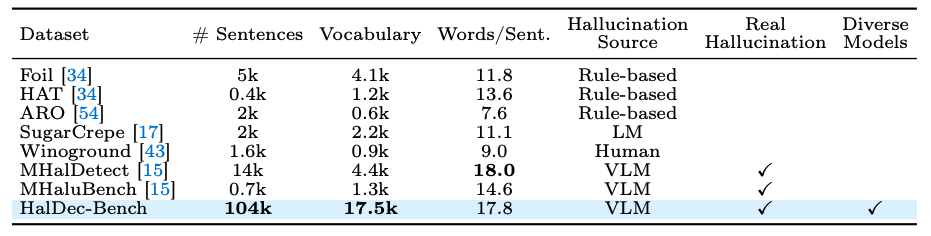
Comparison with other datasets. HalDec-Bench evaluates on a substantially broader vocabulary, using real hallucinations naturally produced by VLMs rather than synthetically constructed ones. HalDec-Bench includes image-sentence pairs generated by diverse VLMs and records the source model for each pair, enabling detailed analysis of model-specific hallucination patterns.
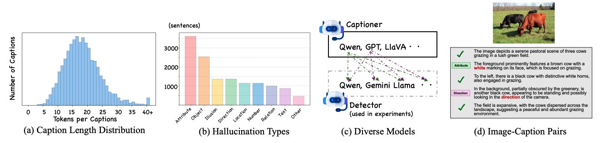
Details of our HalDec-Bench. (a) We confirm that our dataset includes diverse caption length. (b) We also annotate hallucination types into 8 categories. The rarest type is Text, but it still includes nearly 500 instances, enabling deeper analysis. (c) We create captions using diverse VLMs as Captioners, enabling analysis with combinations of diverse Detector models. (d) An example of an annotation.
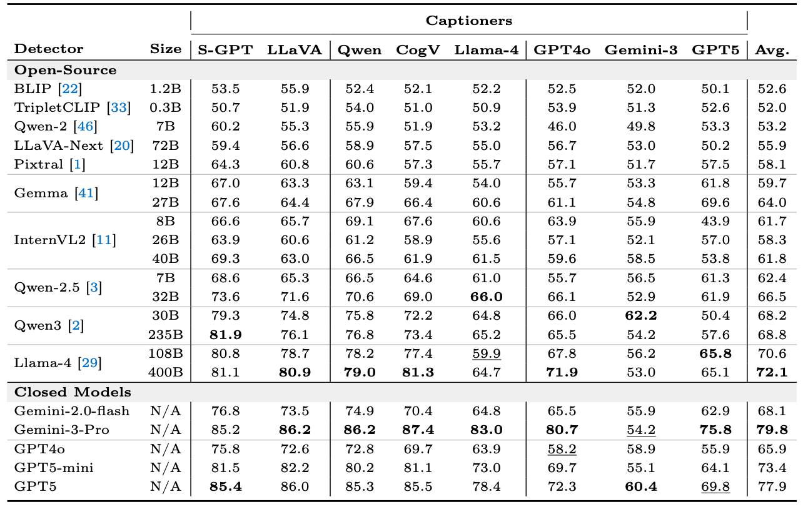
AUROC results across VLMs.
Key Points
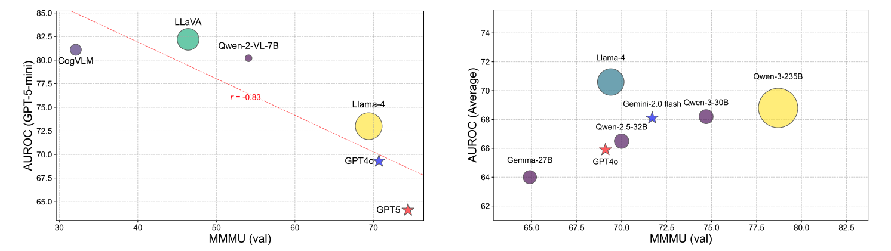
The size of plots indicates the parameter size. Left: MMMU performance measured on Captioners (X-axis) vs. AUROC measured by GPT-5-mini (Y-axis) for each Captioner. Advanced Captioners tend to produce hard-to-detect hallucinations. Right: MMMU (X-axis) vs. AUROC (Y-axis) measured on each detector. Detectors with better MMMU performance tend to perform better on HalDec-Bench.
Key Points
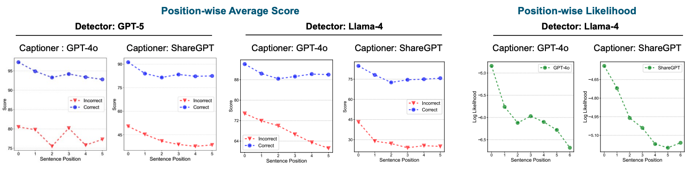
Detectors show positional bias in scoring. We average the detectors’ correctness scores (Y-axis) by sentence position (X-axis) and visualize the results using GPT-4o (Left) and Llama-4 (Right) as detectors. Both detectors assign higher scores to sentences appearing near the beginning of the output. The detector is not provided with any positional information during inference.
Key Points
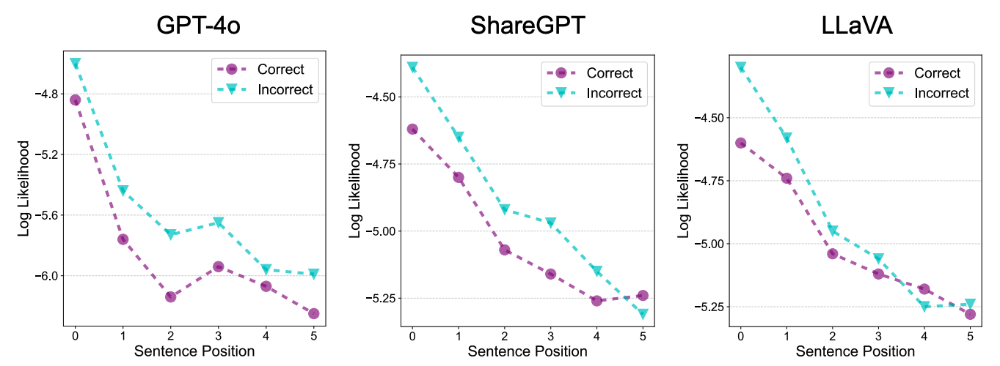
The likelihood of sentences measured by the detector, Llama-4. Incorrect sentences tend to be more plausible than correct ones in terms of the likelihood.
Key Points
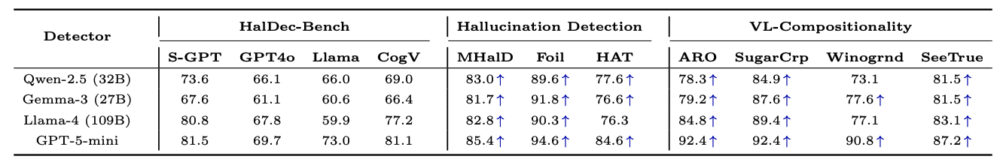
Comparison to existing datasets for hallucination detection and compositionality understanding (AUROC).
Key Points
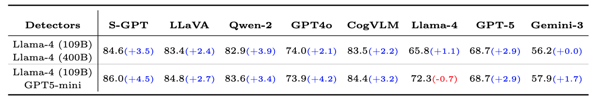
Ensembling improves performance in many cases. The performance difference from the better model used for ensembling is highlighted.
Key Points
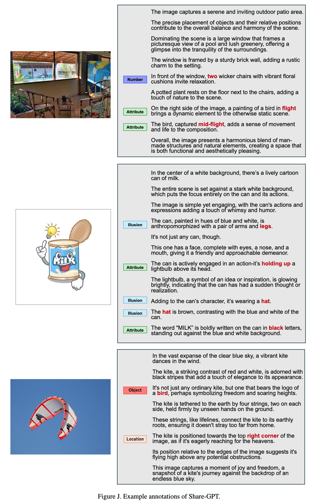
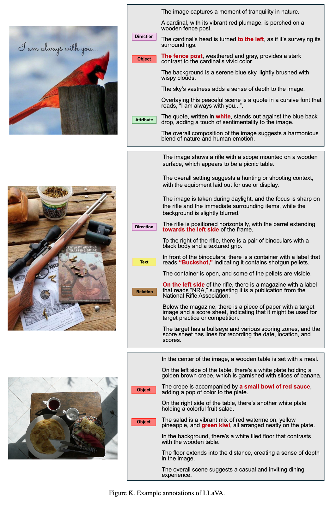
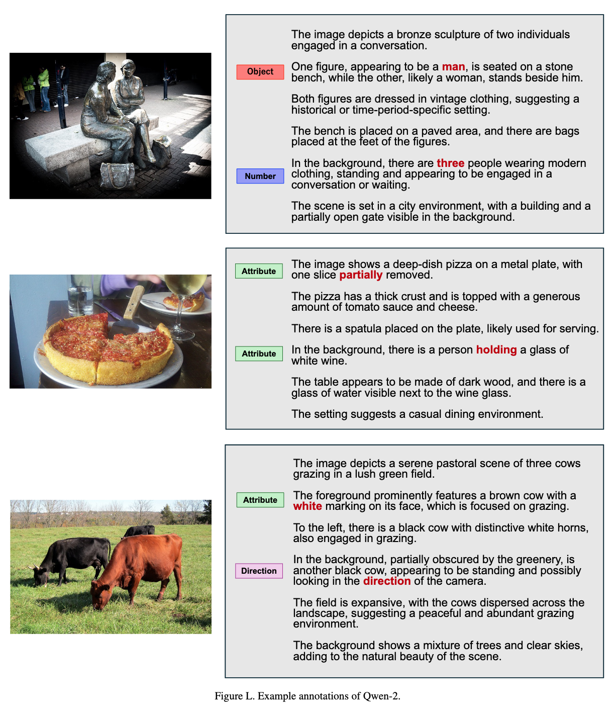
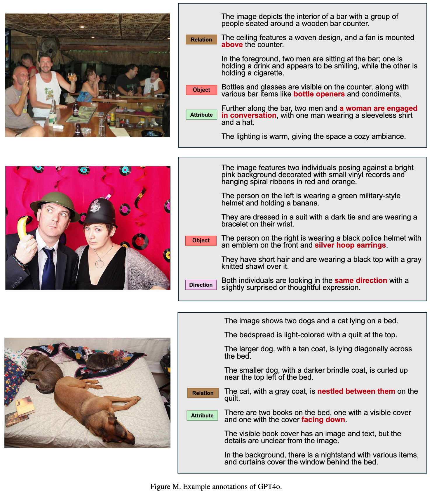
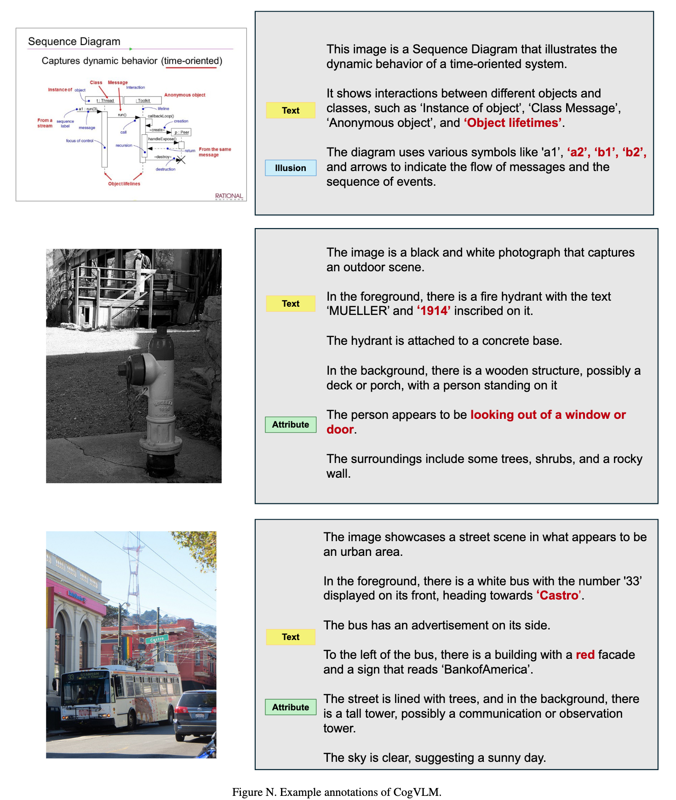
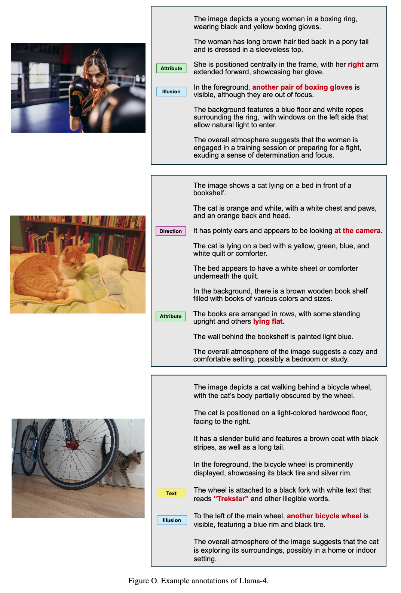
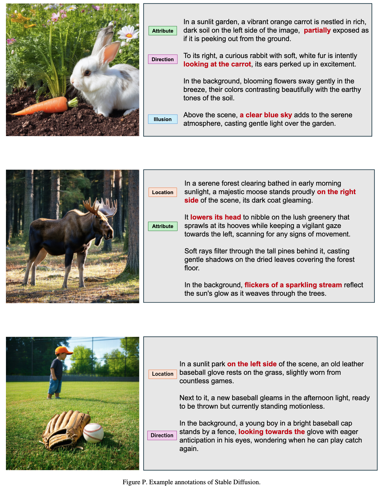
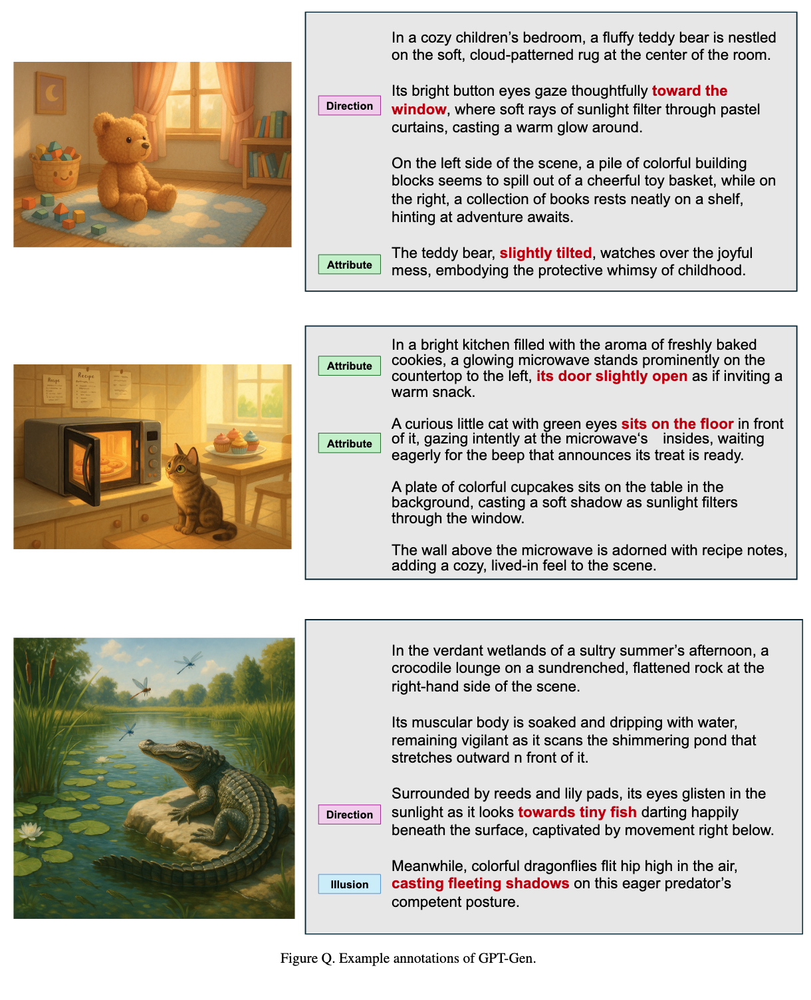
@misc{saito2026haldecbenchbenchmarkinghallucinationdetector,
title={HalDec-Bench: Benchmarking Hallucination Detector in Image Captioning},
author={Kuniaki Saito and Risa Shinoda and Shohei Tanaka and Tosho Hirasawa and Fumio Okura and Yoshitaka Ushiku},
year={2026},
eprint={2603.15253},
archivePrefix={arXiv},
primaryClass={cs.CV},
url={https://arxiv.org/abs/2603.15253},
}